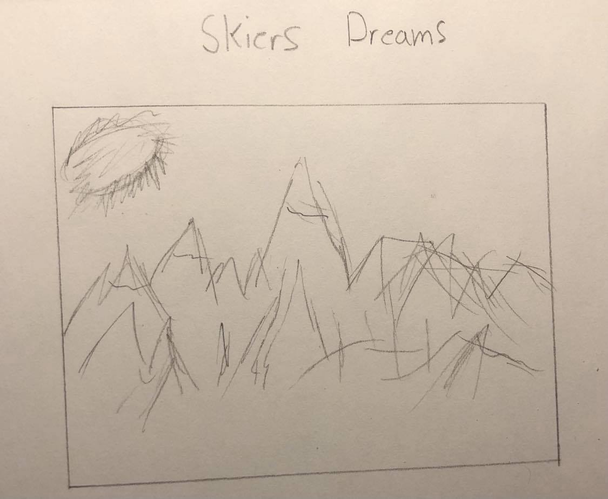
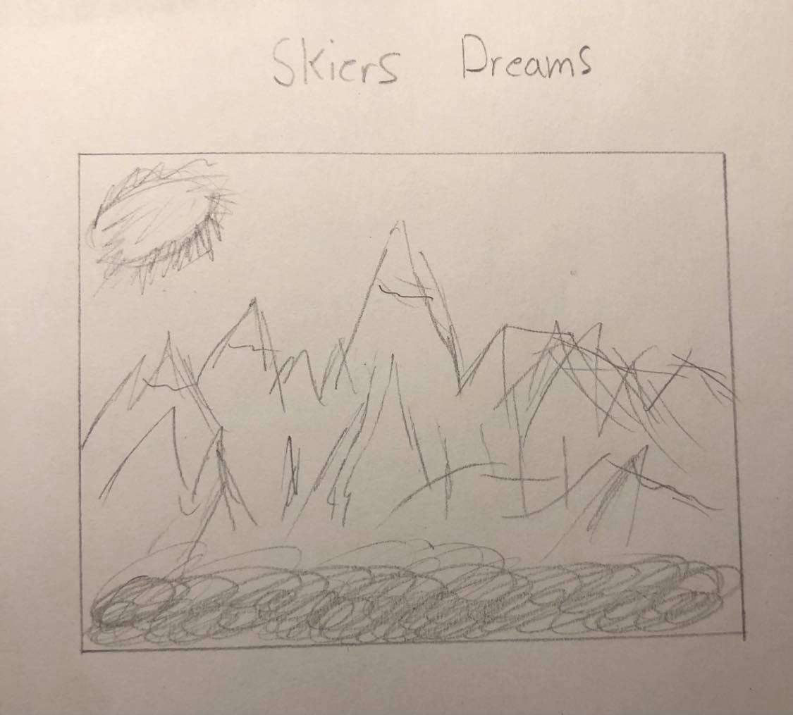
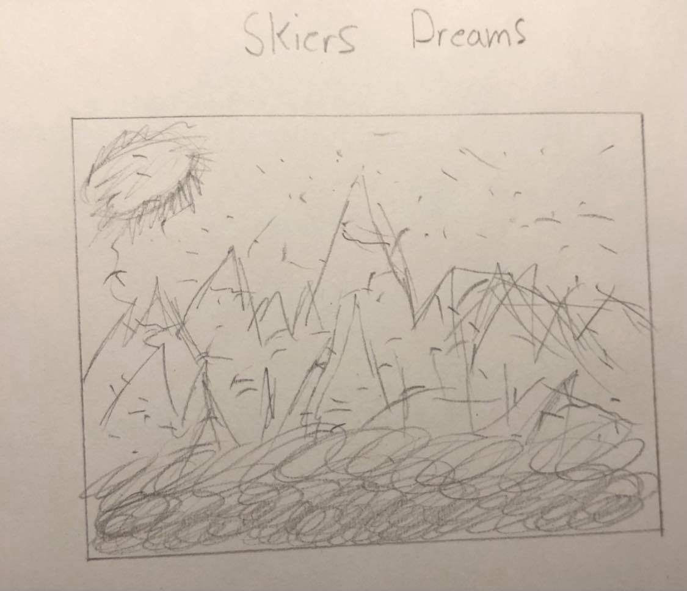

Overall IdeaHaving recently gotten into skiing a couple years ago, and with the ski season coming up very soon, I want to design a net art piece that involves skiing in some way. I want to relate components of the piece to snowfall / reports throughout the ski season. This project will represent excitement for skiiers and do so in correlation with snowfall. |
|
General SketchesI) This first initial sketch shows how the initial piece might look. It will start off with a mountain and nothing much else, mostly normal looking.  II) Now this next sketch shows how data might impact the scene, and add a buildup happening from the bottom of the screen.  III) Anothher way in which data can affect the scene is with a noise increase as shown in the next sketch.  |
|
Internet Relation
The way in which this project will invovle interaction will primary through internet data. To maintain
expression from myself, I will gather data from my favorite ski resort Lake Louise. The gathered data will include
weather conditions from their website, which could include data of overnight, 24 hour, 7 day snowfall reports, and
base depth as well as cumulative snowfall for the season. |
|
Applications Needed
I will be able to do all the drawings and sounds/music myself. |